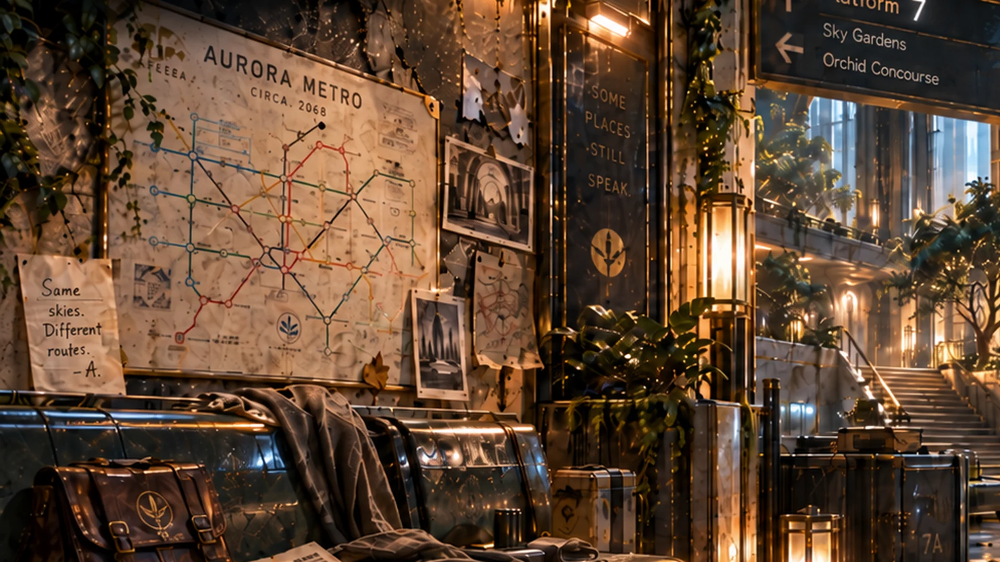

ЭХО 2174 · ЭТАП 3Не удалось загрузить сцену assets/station-face-a.webp

ЭХО 2174
Аркадий:
Ну что ж. Попробуем смотреть, а не угадывать.
Коснитесь любой интересующей области
НаблюдениеЭто ещё не улика и не факт
Журнал
Сначала наблюдение. Потом — анализ. Аркадий не выбирает улики за игрока.
Версии
Контрольный фас A
Пока тестируем один компактный план: карта, скамья и прилегающая зона. Другие планы не производим до проверки на телефоне.